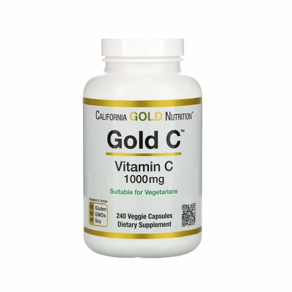

무너지는 영양소
갑자기 비타민?
비타민은 생명에 필수적인 요소입니다. 인간의 성장, 활력, 건강을 유지하기 위해 없어서는 안 되는 필수 물질인데요.
비타민은 인체에서 자체적으로 합성되지 않기 때문에 매일 식사를 통해 공급받아야만 결핍증을 피할 수 있습니다.
그래서 식사를 골고루 잘하는 분이라면 굳이 영양제의 도움을 받을 필요가 없습니다. 하지만 바쁜 현대사회를 살아가는 우리들은 영양소를 고르게 섭취하기 힘든 게 현실이에요.
더 자세히 말해줄래?
비타민A,B,C,D...오메가3, 프로바이오틱스 등 수많은 영양제가 있는데 찾아보기는 귀찮고, 막상 찾아봐도 다 필요하다고 느껴지는 사람을 위해 준비했어요.
또한 각 비타민의 효능에서 끝내지 않고 미백, 노화 방지 등 기능성 비타민에 대해서도 알려줄 거에요.
건강 전문가들이 가장 많이 복용하는 영양제 Top5

1. 종합비타민 17명
음식만으로는 하루에 필요한 영양을 고루 섭취하기 어렵습니다. 특히 바쁜 일상 속에서 과일과 채소를 통해 영양소 균형을 맞추기는 쉽지 않은데요.
이를 보완하기 위해 종합비타민을 섭취하는 분들이 늘어나고 있습니다.
종합비타민, 이래서 먹는다.
신현영(명지병원 가정의학과 교수)
“현대인의 영양 결핍을 보완할 수 있는 최소한의 보조제라 생각.”
강연하(이대목동병원 영양과 영양사)
“불규칙한 식사, 다이어트 등을 할 경우 필요한 비타민, 미네랄을 식사로 다 먹지 못하는 경우가 많다. 이 때문에 다양한 비타민과 미네랄을 한 번에 보충할 수 있는 종합비타민을 먹는다.”
주진희(경희의료원 영양팀 영양사)
“최근 신선한 과일 및 채소의 섭취가 충분치 못하여 종합비타민을 섭취하고 있다.”
2. 프로바이오틱스 15명
프로바이오틱스는 장 안에서 몸에 좋은 작용을 하는 유익균들입니다.
장에 도달하면, 장내 환경에 유익한 작용을 하는 균주를 형성하면서, 장 속에 쌓인 유해균이나 노폐물은 배출하는 작용을 하는데요.
장 건강 이외에 식약처가 인정한 기능성에는 면역과민반응에 의한 피부 상태 개선·코 상태 개선에 도움, 갱년기 여성 건강에 도움, 질내 유익균 증식 및 유해균 억제에 도움, 체지방 감소에 도움을 줍니다.
하지만 프로바이오틱스를 과다 복용하면 설사, 복통을 유발할 수 있고, 암환자같은 면역력이 많이 떨어진 사람은 복용하면 안됩니다.
프로바이오틱스, 이래서 먹는다.
김혜진(행복한 약국 약사)
“프로바이오틱스를 7년째 복용하고 있다. 유산균은 장내 환경을 좋게 해 장 건강과 배변활동을 원활하게 한다. 게다가 장 속에는 몸속 면역세포의 70% 정도가 집중돼 있기 때문에 장 건강이 좋아지면, 면역력도 높아지는 효과를 볼 수 있다. 실제로 프로바이오틱스 복용 후 잔병치레를 하는 경우가 적어졌다.”
이선영(상계백병원 가정의학과 교수)
“프로바이오틱스는 스트레스나 식습관 문제로 생기기 쉬운 과민성대장증후군 증상 개선에 도움이 돼 섭취하고 있다.”
3. 미네랄제(마그네슘, 아연, 칼슘제 등) 12명
미네랄제는 40명 중 12명이 선택하며 3등을 차지했지만 과다복용에 따른 여러 부작용이 있으므로 생략할게요.
성별에 따라 선호하는 영양제
여성
1. 프로바이오틱스
2. 종합비타민
여성 전문가들이 가장 많이 복용하는 비타민은 프로바이오틱스가 차지했는데요.
남성보다 다이어트 등으로 인한 배변 활동 문제가 잦아 배변 활동 개선에 도움이 되는 프로바이오틱스 복용이 많았던 것으로 추정됩니다.
또한 유해균이 질에 번식하게 되면서 생기는 질염 완화에도 도움이 되는데요.
이때 질에 작용하는 유산균을 섭취하면, 유해균 억제 효과를 볼 수 있습니다.
남성
1. 종합비타민
남성 전문가들이 가장 많이 복용하는 비타민은 종합비타민이 차지했습니다.
종합비타민을 제외한 영양제사이에서는 큰 차이가 없었는데요. 다양한 비타민과 미네랄을 한 번에 섭취할 수 있는 종합비타민을 선택했습니다.
그렇다면 나는 어떤 비타민을 먹어야할까?
노화편
자외선과 호흡을 통해 생성되는 활성산소는 피부노화에 가장 중요한 원인인데요.
활성 산소는 탄력감소,주름살 및 기미,주근깨를 포함한 피부노화를 가속화시킵니다.
활성산소의 생성을 억제하고 활성산소를 제거하여 노화를 늦출 수 있습니다.
그래서 어떤 비타민?
가장 대표적인 항산화 비타민은 비타민 C인데요. 비타민C는 콜라겐의 합성 및 탄력을 유지하고,피부에 멜라닌 색소가 침착을 막아 미백에 중요한 역할을 합니다.
두번째로는 비타민 E가 있습니다. 비타민 E는 색소침착을 억제하고, 자외선으로 인한 손상으로부터 피부를 보호하며, 피부탄력과 주름예방에 도움을 줍니다.
미백주사에는 고함량의 비타민c가 들어가는데, 이를 영양제로 섭취하는 '비타민c 메가도스'방법도 찾아보면 좋습니다.
(경험담:1년동안 해봤는데 엄청 하얘졌어요.)
비타민 추천: 아이허브에서 직구로 살 수 있는 캡슐 제형

California Gold Nutrition, Gold C
건강편